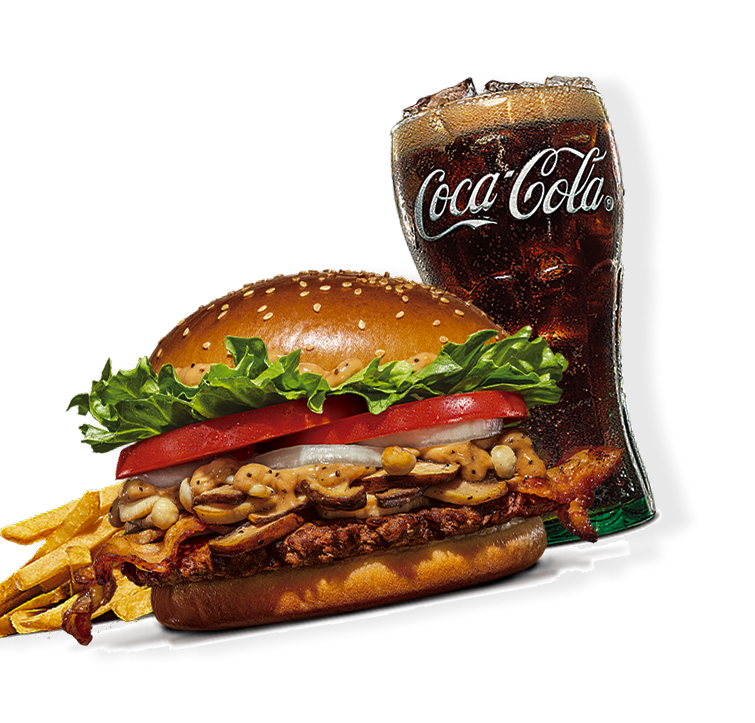
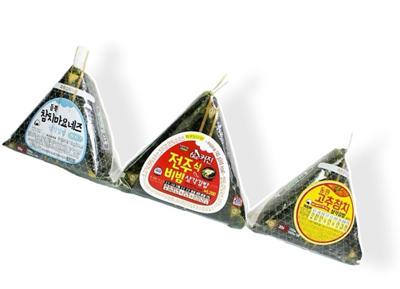
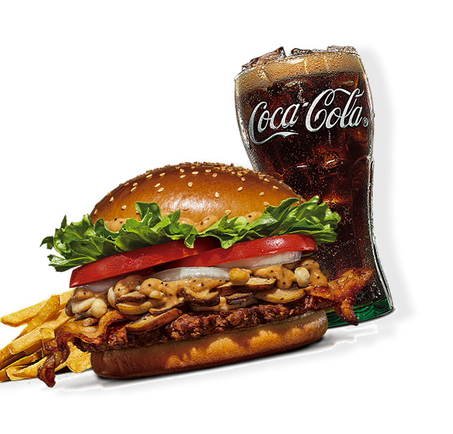
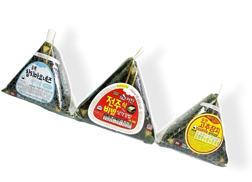
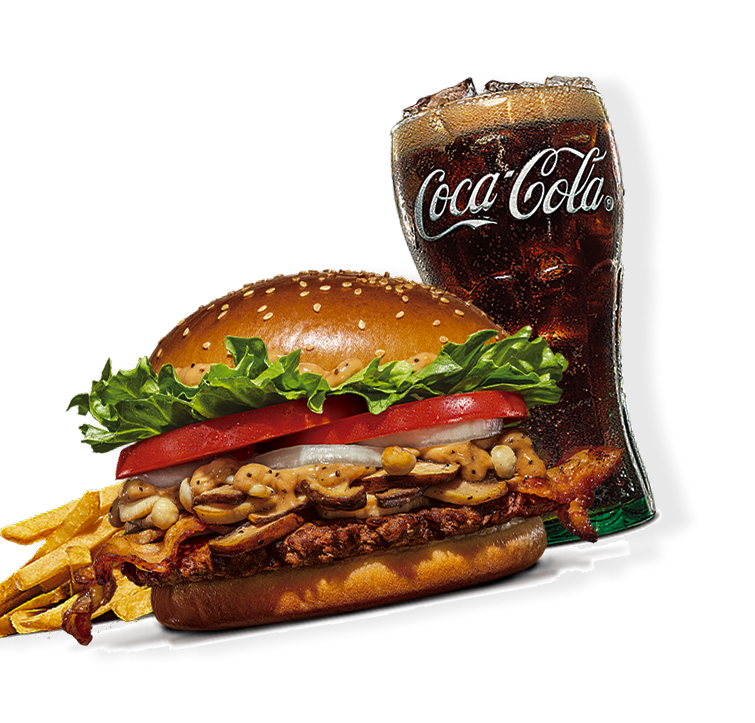
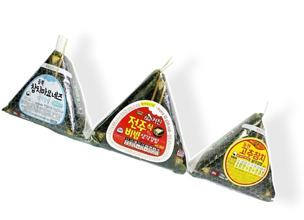

읏짱은 매번 바쁘다는 이유로 끼니를 거르고 인스턴트로 때웠다. 점심은 책상 앞에서, 저녁은 편의점 김밥으로 빠르게 채웠다. 식사량이 갈수록 줄어드니 나중에는 배가 거의 고프지 않게 되었다. 밤은 매일 깊어지고, 최소한의 쪽잠만 잤다. 휴일도 업무 메일을 확인하며 보냈다. 꾸린 가족도 없는 읏짱은 일 외에는 신경 쓸 것이 없었다.
현대 사회의 자본주의 시스템은 '수단으로서의 가치'를 끊임없이 증명하라고 요구한다. 이 과정에서 현대인들은 목적 상실의 공허함을 느낀다. 현대 사회에서 개인은 고유한 '목적'을 지닌 주체로 존중받기보다, 시스템을 유지하고 성장시키는 '인적 자원'이라는 수단으로 취급된다.
"무엇을 위해 사는가?"라는 원초적인 질문은 "얼마나 효율적으로 기능하는가?"라는 수단적 질문에 의해 가려진다. 인간 존재 목적을 '쓸모'로 증명해야 하는 압박 속에서, 개인은 스스로를 목적이 아닌 '수단'으로 대한다. 이것이 바로
“나도 존재의 목적이 있었으면.”
읏짱은 존재의 목적을 찾는 현대인이다. 30대 후반 회사원 모든 일정을 초 단위로 계획하고 실행하는 '시스템 인간'. 감정의 낭비나 비효율적인 행동을 극도로 경계한다. 사회가 주입한 '성공'이라는 수단을 최종 목적으로 착각하며 살아왔다. 나름 엘리트적 생활을 하고 있지만 내면은 존재의 의미에 대한 근원적인 공허함으로 가득 차 있다.
오늘도 야근 중인 읏짱… 밤을 새는 것으로 생체시간이 개조된 지도 오랜 일이다. 읏짱은 무엇을 위해 몸을 갈아가며 일을 하는 것인가. 돈? 하지만 읏짱은 월급이 만족스러운 적은 없었다. 좀 더 많은 돈을 원했고, 좀 더 나은 직급을 꿈꿨다. 그런데 이루고도 남는 것은 피로뿐이었다.
형광등은 빛을 위해, 자판기는 음료를 팔기 위해, 라디오는 방송을 틀기 위해 존재하지만, 읏짱은 인간의 존재의 목적을 찾을 수 없다고 생각했다.


읏짱은 매번 바쁘다는 이유로 끼니를 거르고 인스턴트로 때웠다. 점심은 책상 앞에서, 저녁은 편의점 김밥으로 빠르게 채웠다. 식사량이 갈수록 줄어드니 나중에는 배가 거의 고프지 않게 되었다. 밤은 매일 깊어지고, 최소한의 쪽잠만 잤다. 휴일도 업무 메일을 확인하며 보냈다. 꾸린 가족도 없는 읏짱은 일 외에는 신경 쓸 것이 없었다.